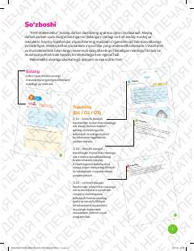

6M6-sinf o'quvchilari uchun matematika fanidan amaliy mashqlar va topshiriqlar to'plami.
Ushbu mashq daftari 6-sinf o'quvchilari uchun matematika fanidan bilimlarni mustahkamlash va amaliy ko'nikmalarni rivojlantirishga mo'ljallangan. Qo'llanmada tezlik, hajm, doiraviy diagrammalar va fazoviy jismlar mavzulariga oid turli darajadagi topshiriqlar va masalalar berilgan.